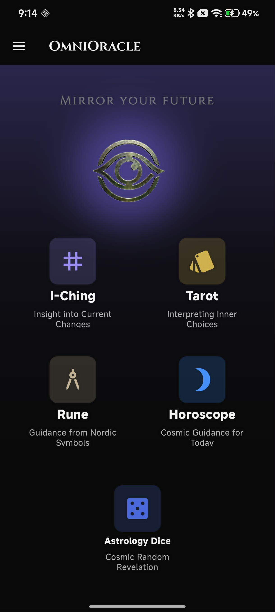
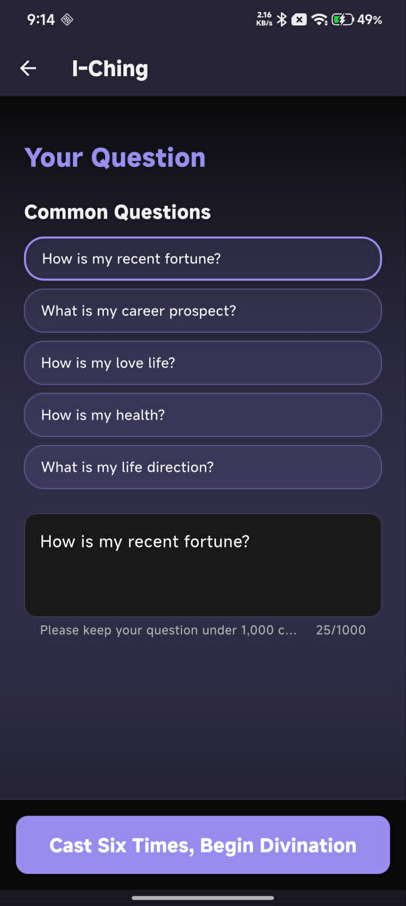
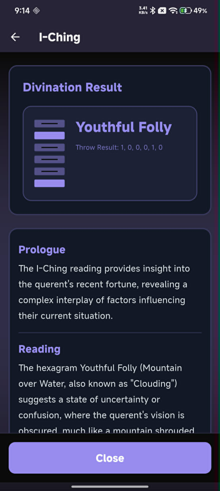
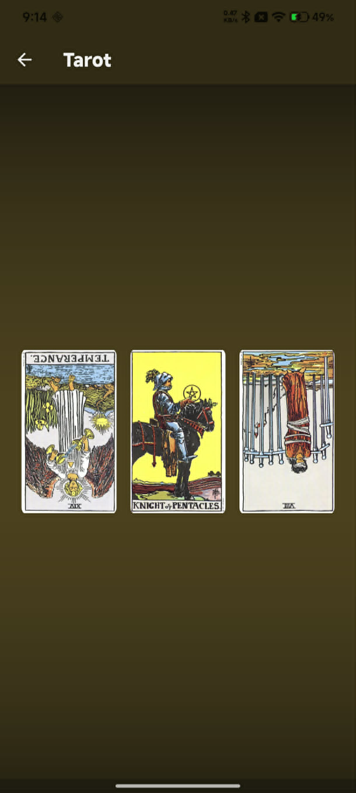
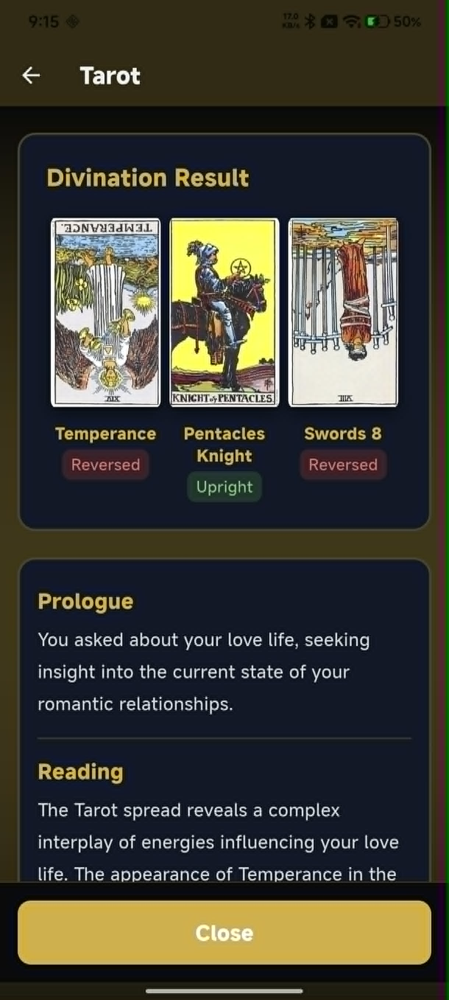
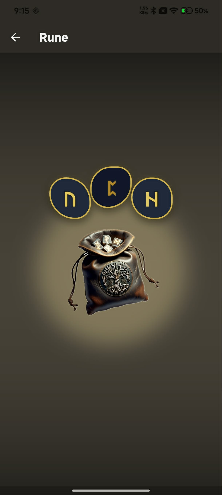
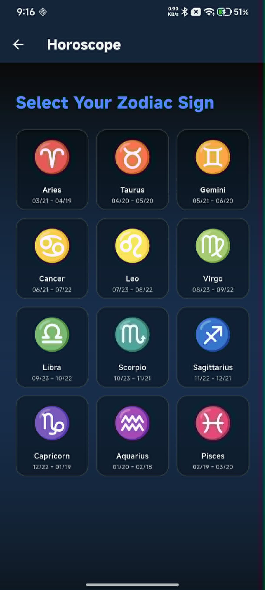
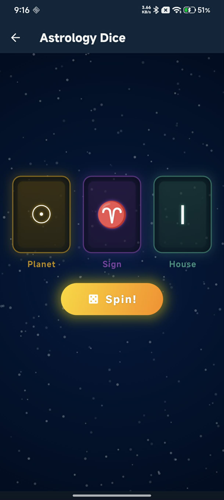
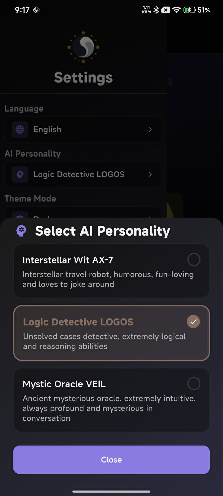

Five ancient wisdom systems — I-Ching, Tarot, Rune, Horoscope, and Astrology Dice — unified in one app and powered by AI. Ask your question, receive your reading. 五大古老智慧系統——易經、塔羅、盧恩符文、星座占卜、星象骰子——整合於一個 App，由 AI 驅動解讀。提出你的問題，接收你的啟示。 五大古老智慧系统——易经、塔罗、卢恩符文、星座占卜、星象骰子——整合于一个 App，由 AI 驱动解读。提出你的问题，接收你的启示。 易経、タロット、ルーン、ホロスコープ、占星術サイコロ——五つの古代の知恵をひとつのアプリに。AIが解読し、あなたの問いに答えます。 주역, 타로, 룬, 별자리, 점성술 주사위——다섯 가지 고대 지혜 시스템을 하나의 앱으로. AI가 해석하고 당신의 질문에 답합니다. Cinco sistemas de sabiduría antigua — I-Ching, Tarot, Runas, Horóscopo y Dados Astrológicos — unificados en una app con inteligencia artificial. Haz tu pregunta, recibe tu lectura. Fünf alte Weisheitssysteme — I-Ging, Tarot, Runen, Horoskop und Astrologiewürfel — vereint in einer App, angetrieben von KI. Stelle deine Frage, erhalte deine Deutung.
Download on Google Play 前往 Google Play 下載 前往 Google Play 下载 Google Play でダウンロード Google Play에서 다운로드 Descargar en Google Play Bei Google Play herunterladen








OmniOracle brings together the world's most enduring divination traditions and reinterprets them through the lens of modern AI. Whether you're seeking clarity on love, career, health, or life direction — the oracle is ready. OmniOracle 匯聚了世界上最經久不衰的占卜傳統，透過現代 AI 重新詮釋。無論你在尋求愛情、事業、健康或人生方向的指引，神諭隨時候命。 OmniOracle 汇聚了世界上最经久不衰的占卜传统，通过现代 AI 重新诠释。无论你在寻求爱情、事业、健康或人生方向的指引，神谕随时候命。 OmniOracle は、世界で最も長く続いてきた占いの伝統を集め、現代の AI で再解釈します。恋愛、仕事、健康、人生の方向性——何を求めていても、オラクルはいつでも準備ができています。 OmniOracle은 세계에서 가장 오래된 점술 전통을 모아 현대 AI로 재해석합니다. 사랑, 커리어, 건강, 인생 방향 — 무엇을 원하든 오라클은 항상 준비되어 있습니다. OmniOracle reúne las tradiciones de adivinación más duraderas del mundo y las reinterpreta con IA moderna. Ya sea que busques claridad en el amor, la carrera, la salud o la dirección de tu vida, el oráculo está listo. OmniOracle vereint die beständigsten Wahrsagetraditionen der Welt und interpretiert sie durch das Prisma moderner KI neu. Ob du Klarheit in Liebe, Karriere, Gesundheit oder Lebensrichtung suchst — das Orakel ist bereit.
Choose from common questions or type your own. The I-Ching guides you through six coin casts to build a hexagram — then AI delivers a deep, personalised reading covering the hexagram meaning, action suggestions, and a closing reflection. 從常見問題中選擇，或自行輸入。易經引導你完成六次擲錢成卦，然後 AI 提供深度個人化解讀，涵蓋卦義、行動建議與結語省思。 从常见问题中选择，或自行输入。易经引导你完成六次掷钱成卦，然后 AI 提供深度个性化解读，涵盖卦义、行动建议与结语省思。 よくある質問から選ぶか、自分で入力してください。易経があなたを六回の硬貨投げに導き、六十四卦を形成します。そしてAIが、卦の意味・行動提案・締めくくりの省察を含む、深く個人化された解読を提供します。 일반적인 질문 중에서 선택하거나 직접 입력하세요. 주역이 여섯 번의 동전 던지기를 안내하여 괘를 만들고, AI가 괘의 의미, 행동 제안, 마무리 성찰을 포함한 깊은 개인화된 해석을 제공합니다. Elige entre preguntas comunes o escribe la tuya. El I-Ching te guía a través de seis lanzamientos de monedas para construir un hexagrama — luego la IA ofrece una lectura profunda y personalizada con el significado del hexagrama, sugerencias de acción y una reflexión final. Wähle aus häufigen Fragen oder tippe deine eigene. Das I-Ging führt dich durch sechs Münzwürfe zum Hexagramm — dann liefert die KI eine tiefe, personalisierte Deutung mit Hexagrammbedeutung, Handlungsvorschlägen und einer abschließenden Reflexion.
Three cards are drawn — past, present, and future — from a classic Rider-Waite deck. Each card can appear upright or reversed. AI interprets the spread as a unified narrative, giving you a reading that speaks to your specific question. 從經典萊德偉特牌組中抽出三張——過去、現在、未來。每張牌可能正位或逆位出現。AI 將牌陣解讀為一個統一的敘事，針對你的具體問題給出解讀。 从经典莱德韦特牌组中抽出三张——过去、现在、未来。每张牌可能正位或逆位出现。AI 将牌阵解读为一个统一的叙事，针对你的具体问题给出解读。 クラシックなライダー・ウェイト・デッキから3枚を引きます——過去・現在・未来。各カードは正位置または逆位置で現れることがあります。AIはスプレッドを統一された物語として解釈し、あなたの具体的な質問に答えます。 클래식 라이더-웨이트 덱에서 세 장을 뽑습니다 — 과거, 현재, 미래. 각 카드는 정방향 또는 역방향으로 나타날 수 있습니다. AI는 스프레드를 통합된 이야기로 해석하여 당신의 구체적인 질문에 답합니다. Se sacan tres cartas — pasado, presente y futuro — de una baraja clásica Rider-Waite. Cada carta puede aparecer derecha o invertida. La IA interpreta la tirada como una narrativa unificada que responde a tu pregunta específica. Drei Karten werden gezogen — Vergangenheit, Gegenwart und Zukunft — aus einem klassischen Rider-Waite-Deck. Jede Karte kann aufrecht oder umgekehrt erscheinen. Die KI interpretiert das Spread als einheitliche Erzählung, die deine spezifische Frage beantwortet.
Reach into the rune pouch and draw three stones. Each Elder Futhark rune carries its own energy — upright or reversed. AI weaves them into a reading that speaks directly to your question, honouring both the ancient symbolism and your present reality. 伸手進入符文袋，抽出三顆石子。每個古符文都帶有自身的能量——正向或逆向。AI 將其編織成直接回應你問題的解讀，既尊重古老象徵，也貼近你當下的現實。 伸手进入符文袋，抽出三颗石子。每个古符文都带有自身的能量——正向或逆向。AI 将其编织成直接回应你问题的解读，既尊重古老象征，也贴近你当下的现实。 ルーンポーチに手を入れ、3つの石を引きます。各古フサルクのルーンはそれぞれのエネルギーを持ちます——正位置または逆位置。AIはそれらを、古代の象徴と現在の現実の両方を尊重しながら、あなたの質問に直接語りかける解読に織り込みます。 룬 주머니에 손을 넣어 세 개의 돌을 뽑습니다. 각 엘더 푸사르크 룬은 고유한 에너지를 가집니다 — 정방향 또는 역방향. AI는 고대의 상징성과 현재의 현실을 모두 존중하면서 당신의 질문에 직접 말하는 해석으로 엮어냅니다. Mete la mano en la bolsa de runas y saca tres piedras. Cada runa del Elder Futhark lleva su propia energía — derecha o invertida. La IA las teje en una lectura que habla directamente a tu pregunta, honrando tanto el simbolismo antiguo como tu realidad presente. Greife in den Runenbeutel und ziehe drei Steine. Jede Elder-Futhark-Rune trägt ihre eigene Energie — aufrecht oder umgekehrt. Die KI verwebt sie zu einer Deutung, die direkt auf deine Frage eingeht und dabei sowohl die alte Symbolik als auch deine gegenwärtige Realität ehrt.
Select your zodiac sign for a daily horoscope reading powered by AI. Or spin the Astrology Dice — three dice representing Planet, Sign, and House — for an instant, spontaneous cosmic snapshot that AI turns into a meaningful interpretation. 選擇你的星座，獲得 AI 驅動的每日星座解讀。或旋轉星象骰子——三顆分別代表行星、星座與宮位的骰子——讓 AI 將即時的宇宙快照轉化為有意義的詮釋。 选择你的星座，获得 AI 驱动的每日星座解读。或旋转星象骰子——三颗分别代表行星、星座与宫位的骰子——让 AI 将即时的宇宙快照转化为有意义的诠释。 星座を選んで、AIが生成する毎日のホロスコープ解読を受けましょう。または占星術サイコロを振ってください——惑星・星座・ハウスを表す3つのサイコロ——AIが瞬時の宇宙的スナップショットを意味のある解釈に変えます。 별자리를 선택하여 AI가 제공하는 일일 별자리 운세를 받으세요. 또는 점성술 주사위를 돌려보세요 — 행성, 별자리, 하우스를 나타내는 세 개의 주사위 — AI가 즉각적인 우주 스냅샷을 의미 있는 해석으로 바꾸어 줍니다. Selecciona tu signo zodiacal para una lectura diaria del horóscopo impulsada por IA. O gira los Dados Astrológicos — tres dados que representan Planeta, Signo y Casa — para una instantánea cósmica espontánea que la IA convierte en una interpretación significativa. Wähle dein Tierkreiszeichen für eine tägliche KI-gestützte Horoskop-Deutung. Oder würfle die Astrologiewürfel — drei Würfel für Planet, Zeichen und Haus — für eine spontane kosmische Momentaufnahme, die die KI in eine bedeutungsvolle Interpretation verwandelt.
A humorous, fun-loving interstellar travel robot who loves to joke around. Keeps the cosmic serious light-hearted. 幽默風趣的星際旅行機器人，熱愛開玩笑。讓宇宙大事也能輕鬆以對。 幽默风趣的星际旅行机器人，热爱开玩笑。让宇宙大事也能轻松以对。 ユーモラスで楽しい星間旅行ロボット。冗談が大好きで、宇宙の大事を軽やかに伝えます。 유머러스하고 재미를 좋아하는 성간 여행 로봇. 농담을 좋아하며 우주의 진지함을 가볍게 만듭니다. Un robot viajero interestelar, humorístico y divertido que adora bromear. Hace que lo cósmico sea ameno. Ein humorvoller, lebhafter Interstellar-Reiseroboter, der Witze liebt. Macht das Kosmische leichter.
An unsolved-cases detective with razor-sharp logic and reasoning. Breaks down mystical readings with analytical precision. 擅長未解案件的偵探，邏輯與推理能力極強。以分析精準度拆解神秘解讀。 擅长未解案件的侦探，逻辑与推理能力极强。以分析精准度拆解神秘解读。 未解決事件の探偵で、鋭い論理と推理力を持ちます。神秘的な解読を分析的な精度で解き明かします。 미해결 사건 전문 탐정으로 날카로운 논리와 추리력을 갖추고 있습니다. 신비로운 해석을 분석적 정확성으로 분해합니다. Un detective de casos sin resolver con lógica y razonamiento agudísimos. Descompone lecturas místicas con precisión analítica. Ein Detektiv für ungelöste Fälle mit messerscharfer Logik und Vernunft. Zerlegt mystische Deutungen mit analytischer Präzision.
An ancient, mysterious oracle — deeply intuitive, always profound and enigmatic in conversation. The truest voice of the cosmos. 古老神秘的神諭者，直覺深邃，對話中始終深刻而玄妙。宇宙最真實的聲音。 古老神秘的神谕者，直觉深邃，对话中始终深刻而玄妙。宇宙最真实的声音。 古く神秘的なオラクル——深く直感的で、常に深遠で謎めいた会話をします。宇宙の最も真実の声。 고대의 신비로운 신탁자 — 깊이 직관적이며 대화에서 항상 심오하고 수수께끼 같습니다. 우주의 가장 진실한 목소리. Un oráculo antiguo y misterioso — profundamente intuitivo, siempre profundo y enigmático en la conversación. La voz más auténtica del cosmos. Ein altes, geheimnisvolles Orakel — zutiefst intuitiv, stets tiefsinnig und rätselhaft im Gespräch. Die wahrhaftigste Stimme des Kosmos.
OmniOracle does not store your questions, readings, or personal information on any server. Readings are generated in the moment and remain private. Ad serving is provided by Google AdMob in accordance with Google's privacy policy. OmniOracle 不會在任何伺服器上儲存你的問題、解讀或個人資訊。解讀在當下生成並保持私密。廣告服務由 Google AdMob 提供，遵循 Google 的隱私政策。 OmniOracle 不会在任何服务器上存储你的问题、解读或个人信息。解读在当下生成并保持私密。广告服务由 Google AdMob 提供，遵循 Google 的隐私政策。 OmniOracle はあなたの質問、解読、個人情報をいかなるサーバーにも保存しません。解読はその場で生成され、プライベートに保たれます。広告サービスはGoogle のプライバシーポリシーに従い、Google AdMob によって提供されます。 OmniOracle은 당신의 질문, 해석 또는 개인 정보를 어떤 서버에도 저장하지 않습니다. 해석은 그 순간에 생성되고 비공개로 유지됩니다. 광고 서비스는 Google의 개인정보 보호정책에 따라 Google AdMob에서 제공됩니다. OmniOracle no almacena tus preguntas, lecturas ni información personal en ningún servidor. Las lecturas se generan en el momento y permanecen privadas. La publicidad es proporcionada por Google AdMob conforme a la política de privacidad de Google. OmniOracle speichert deine Fragen, Deutungen oder persönlichen Daten auf keinem Server. Deutungen werden im Moment generiert und bleiben privat. Werbung wird von Google AdMob gemäß der Datenschutzrichtlinie von Google bereitgestellt.